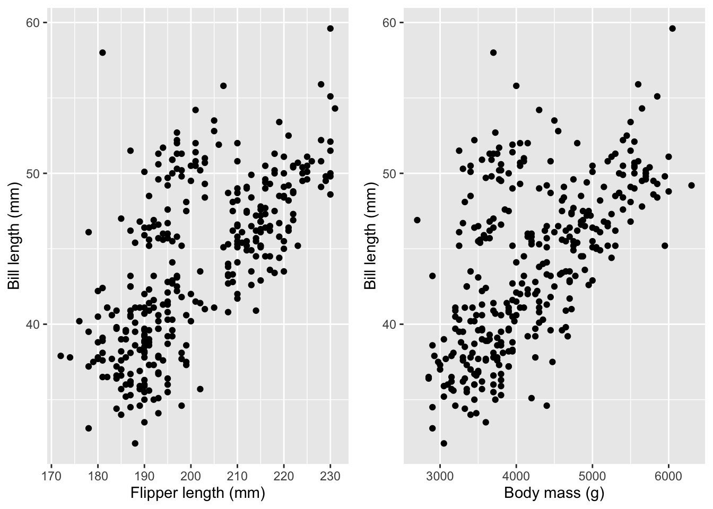

install.packages("palmerpenguins")
library(palmerpenguins)
data(penguins)3 Linear Regression
Let’s say what we mean by a linear model. This is an equation that describes the response as a linear function of some feature(s).
Note that the linear model is a relationship, while linear regression is a method of estimating that relationship. But since it is by far the most common way of estimating that relationship, the terms are often used interchangeably.
Linear regression means drawing a straight line through a scatterplot of the data. That’s easy to picture when there is a single feature, so let’s look at an example.
3.1 Palmer penguins data
This first example will use data from the palmerpenguins package. It was created by Allison Horst and contains observations of 344 penguins from the Palmer Station Antarctica LTER site. There are eight features: year, species, sex, island, bill width (mm), bill length (mm), flipper length (mm), and body mass (g). We’ll begin by installing and then importing the palmerpenguins package, and then loading the data.
The data is loaded. Let’s look at it. First, we’ll familiarize ourselves with the values.
# check out the palmer penguins data
summary(penguins) species island bill_length_mm bill_depth_mm
Adelie :152 Biscoe :168 Min. :32.10 Min. :13.10
Chinstrap: 68 Dream :124 1st Qu.:39.23 1st Qu.:15.60
Gentoo :124 Torgersen: 52 Median :44.45 Median :17.30
Mean :43.92 Mean :17.15
3rd Qu.:48.50 3rd Qu.:18.70
Max. :59.60 Max. :21.50
NA's :2 NA's :2
flipper_length_mm body_mass_g sex year
Min. :172.0 Min. :2700 female:165 Min. :2007
1st Qu.:190.0 1st Qu.:3550 male :168 1st Qu.:2007
Median :197.0 Median :4050 NA's : 11 Median :2008
Mean :200.9 Mean :4202 Mean :2008
3rd Qu.:213.0 3rd Qu.:4750 3rd Qu.:2009
Max. :231.0 Max. :6300 Max. :2009
NA's :2 NA's :2 print(penguins)# A tibble: 344 × 8
species island bill_length_mm bill_depth_mm flipper_length_mm body_mass_g
<fct> <fct> <dbl> <dbl> <int> <int>
1 Adelie Torgersen 39.1 18.7 181 3750
2 Adelie Torgersen 39.5 17.4 186 3800
3 Adelie Torgersen 40.3 18 195 3250
4 Adelie Torgersen NA NA NA NA
5 Adelie Torgersen 36.7 19.3 193 3450
6 Adelie Torgersen 39.3 20.6 190 3650
7 Adelie Torgersen 38.9 17.8 181 3625
8 Adelie Torgersen 39.2 19.6 195 4675
9 Adelie Torgersen 34.1 18.1 193 3475
10 Adelie Torgersen 42 20.2 190 4250
# ℹ 334 more rows
# ℹ 2 more variables: sex <fct>, year <int>Suppose we think that all penguins grow in a certain proportional way. Then we may be able to estimate the penguin’s mass based on the length of its flipper. Let’s take a look at how that relationship looks in the data.
Code
ggplot(penguins) +
aes(x=flipper_length_mm, y=body_mass_g) +
geom_point() +
xlab("Flipper length (mm)") +
ylab("Penguin mass (g)") +
geom_smooth(method='lm', se=FALSE)I’ve added a regression line to illustrate the assumed linear relationship. Obviously, you’d want your model of the response to fit perfectly but there’s no line that would go through all the points.
3.2 Residuals
We have a special term for the difference between the fitted line and the dots. We call the differences residuals, and there is one per dot. The difference is calculated as the vertical distance, as shown here:
Code
ggplot(penguins) +
aes(x=flipper_length_mm, y=body_mass_g) +
geom_point() +
xlab("Flipper length (mm)") +
ylab("Penguin mass (g)") +
geom_smooth(method='lm', se=FALSE) +
geom_segment(
data=mutate(
penguins,
fitted = predict(m_p, penguins))[250:251,],
mapping=aes(x=flipper_length_mm,
xend=flipper_length_mm,
y=body_mass_g,
yend=fitted),
color='red',
lwd=1
)
3.3 How the line is calculated
A line is totally defined by its slope and intercept (intercept is where the line crosses the y-axis). The math of linear regression is just a way to calculate the slope and intercept of that line, and its intuition is also quite simple. It starts with the goal of minimizing the errors. There is an error for each dot, which is the difference between the line and the dot. To minimize the errors, we need to combine all those numbers into one (otherwise, you might have to worry about what effect a change in “A” has on “B”, etc.) A natural way to combine many numbers into one is to add them together. But there is a problem: errors can be negative (when the model fit is greater than the observed data.) If that seems complicated, just understand that both of these lines have residuals that sum to zero:
Code
library(cowplot)
regression_plot = ggplot(penguins) +
aes(x=flipper_length_mm, y=body_mass_g) +
geom_point() +
xlab("Flipper length (mm)") +
ylab("Penguin mass (g)") +
geom_smooth(method='lm', se=FALSE)
mean_plot = ggplot(penguins) +
aes(x=flipper_length_mm, y=body_mass_g) +
geom_point() +
xlab("Flipper length (mm)") +
ylab("Penguin mass (g)") +
geom_hline(
mapping=aes(yintercept=mean(body_mass_g, na.rm=TRUE)),
color="blue",
lwd=1)
cowplot::plot_grid(regression_plot, mean_plot, ncol=2)A large negative error may be a good thing for “minimizing” error, but we don’t want that because the error is large. So the errors are squared before adding them together. This is the origin of terms you might have heard, like the sum of squared errors or the mean squared error.
3.3.1 The lm() function in R
The function to estimate a linear regression model in R is called lm(). We’ll get quite familiar with the function during this workshop. Now let’s use it to estimate the regression line in our penguin body size example.
penguin_mass_model = lm(
body_mass_g ~ flipper_length_mm,
data=penguins)
summary(penguin_mass_model)
Call:
lm(formula = body_mass_g ~ flipper_length_mm, data = penguins)
Residuals:
Min 1Q Median 3Q Max
-1058.80 -259.27 -26.88 247.33 1288.69
Coefficients:
Estimate Std. Error t value Pr(>|t|)
(Intercept) -5780.831 305.815 -18.90 <2e-16 ***
flipper_length_mm 49.686 1.518 32.72 <2e-16 ***
---
Signif. codes: 0 '***' 0.001 '**' 0.01 '*' 0.05 '.' 0.1 ' ' 1
Residual standard error: 394.3 on 340 degrees of freedom
(2 observations deleted due to missingness)
Multiple R-squared: 0.759, Adjusted R-squared: 0.7583
F-statistic: 1071 on 1 and 340 DF, p-value: < 2.2e-16There is a bit of unique R code in the call to lm(): it uses R’s formula syntax. A formula in R has the response variable on the left of a tilde (~) and predictors on the right. You may see it in other contexts but its most common use is to specify the variables of a regression formula. Having used the lm() function to estimate the regression model, we then use the summary() function to inspect the model fit. Let’s dig into the summary() output.
The important parts of the summary() results are the Coefficients: and below. The first two parts of the summary() result (Call: and Residuals:) are usually not very interesting. At this point, you probably recognize that the Call: is repeating back the function call that created the model, and the Residuals: section tells you about the size of the residuals.
Starting with Coefficients: we begin to learn about the model fit. You remember that the linear model fits a straight line to the data. And you might also know that you can describe a line by its slope and intercept, as in \(y = mx + b\). In that equation, \(b\) is the intercept and \(m\) is the slope, also known as the coefficient of \(x\). The coefficient of flipper_length_mm functions as the slope of our line, and it is listed in the Estimate column. As you might guess, the intercept of the estimated line is listed as under the Estimate column and the (Intercept) row.
The Std. Error column is an estimate of uncertainty in the coefficient estimates. The t value column is just the Estimate divided by the Std. Error, and it is used to calculate the Pr(>|t|) column (better known as the coefficient p-value.)
The remaining information (Residual standard error, degrees of freedom, Multiple R-squared, Adjusted R-squared, F-statistic, and p-value) is beyond this introductory workshop. Just know that the p-value reported here is almost useless.
In contrast, the coefficient p-values, reported as Pr(>|t|) in the Coefficients: table, are often the main focus of analysis. Making use of these p-values and interpreting the asterisks as indicators of statistical significance depends on proper use of the lm() function. In particular, you must decide which variables to use before fitting a model, and you can only try once - otherwise, the p-values will be biased by peeking at the result before doing the test.
3.4 Assumptions of linear regression
There are a few assumptions about your data that come with linear regression. Before you can accept the results, you must check these:
Linearity: The actual relationship between the features and the response is linear. A trend in the fitted vs. residual plot is evidence that the linearity assumption may be wrong.
Normality: Check that the residuals have a normal distribution. You can check this via the Q-Q plot, which should have all the dots in an approximately straight line.
Constant/equal residual variance: The residuals should have the same variability, also called the scale. Confirm this by the location-scale plot.
Independence: The residuals must be independent of each other. You can’t actually check this from the data, so you have to think carefully about how the value of one residual might depend upon others (for instance if they are measured at locations that touch, maybe there is something that affects both.) Data collection should be planned in order to have independent responses.
Let’s check the assumptions on the penguin body size model:
layout(matrix(1:4, 2, 2))
plot(penguin_mass_model)Here, there is a slight “U” shape in the Residual vs Fitted plot and in the Q-Q plot, which indicates that the relationship between flipper length and body mass is not quite linear. The points fall very close to the dashed diagonal on the Q-Q plot, which indicates that the residuals all seem to be from a nearly identical normal distribution. There is no clear pattern in the scale-location plot, so the residual variances are approximately equal. The deviations from ideal are pretty minor, and you could probably rely on this model to predict the mass of new penguins. But a more correct model is possible by looking at the species separately, as we’ll see in the next chapter.
3.5 Multiple features
Our example above has just a single feature to create a model for the response. It is more common to have multiple features, and there really is no limit to how many. However, if the number of features is greater than the number of observations, then we will have problems with the estimation methods.
When there are multiple features, they may be correlated with each other. This is almost always true of observational data (which are features that are measured from the observed units). Typically, the only way to have perfectly uncorrelated data is by designing an experiment where the treatments are uncorrelated.
Correlated features will affect each others’ estimates, and the effect increases with the amount of correlation. That happens because when features are correlated, the model has similar fits if one coefficient increases and the other decreases, or vice versa.
We can reasonably assume that penguins with longer flippers and heavier bodies also have longer bills. That’s true, as seen in this figure:
Code
bill_plot_1 = ggplot(penguins) +
aes(x=flipper_length_mm, y=bill_length_mm) +
geom_point() +
xlab("Flipper length (mm)") +
ylab("Bill length (mm)")
bill_plot_2 = ggplot(penguins) +
aes(x=body_mass_g, y=bill_length_mm) +
geom_point() +
xlab("Body mass (g)") +
ylab("Bill length (mm)")
cowplot::plot_grid(bill_plot_1, bill_plot_2, ncol=2)
As a result, including the bill length as a second feature in the model for body mass leads to a change in the estimated regression coefficient for flipper length and an increase in the uncertainty for that estimate:
correlated_model = lm(
body_mass_g ~ flipper_length_mm + bill_length_mm,
data=penguins)
summary(correlated_model)
Call:
lm(formula = body_mass_g ~ flipper_length_mm + bill_length_mm,
data = penguins)
Residuals:
Min 1Q Median 3Q Max
-1090.5 -285.7 -32.1 244.2 1287.5
Coefficients:
Estimate Std. Error t value Pr(>|t|)
(Intercept) -5736.897 307.959 -18.629 <2e-16 ***
flipper_length_mm 48.145 2.011 23.939 <2e-16 ***
bill_length_mm 6.047 5.180 1.168 0.244
---
Signif. codes: 0 '***' 0.001 '**' 0.01 '*' 0.05 '.' 0.1 ' ' 1
Residual standard error: 394.1 on 339 degrees of freedom
(2 observations deleted due to missingness)
Multiple R-squared: 0.76, Adjusted R-squared: 0.7585
F-statistic: 536.6 on 2 and 339 DF, p-value: < 2.2e-16The estimated coefficient has changed from 49.7 to round(coef(correlated_model)[[2]], 1) and the standard error of the estimated coefficient for flipper_length_mm is 2, which is 32% greater than the previous standard error of 1.5.
3.5.1 Which features to include?
A common question is how to decide which features to include in a model. There’s no definitive answer, since the “best” model depends on the goal of the analysis, and model selection frequently ends in marginal and somewhat subjective decisions. In the simplest terms, the correct features for your model are the ones that are relevant to your analysis.
If your goal is to study the relationship between some specific features and the response, then it’s best to select those features before fitting a model, and of course you have to keep in mind assumption (1) for linear models: “The actual relationship between the features and the response is linear.” This is a theory-driven approach to model selection, because you begin with an idea of the model you want to fit, and then tell the computer to estimate it.
There are data-driven ways of doing model selection, most of which can be summarized as: try a model and then change it to get a better fit. These approaches are dangerous because they tend to over-fit the training data, which usually makes the model less useful for future data. In order to mitigate that risk, a portion of the data has to be held out from the model fitting, to test the model with.